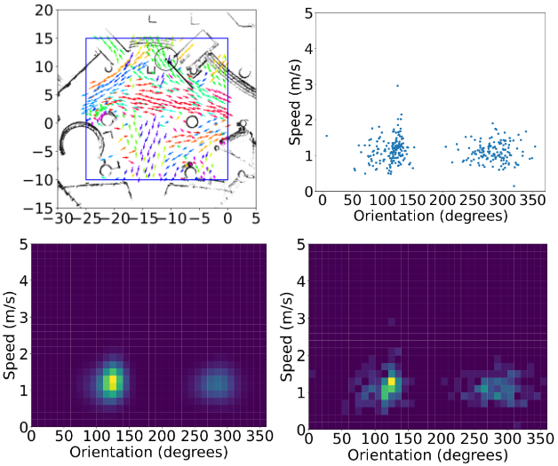
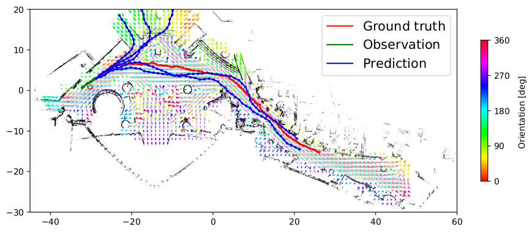

Publications
|
Neural Implicit Flow Fields for Spatio-Temporal Motion Mapping , Shih-Min Yang, Andrey Rudenko, Tomasz P. Kucner, Achim J. Lilienthal, Martin Magnusson arxiv 2025 A continuous spatio-temporal map of dynamics using implicit neural representations, achieving more accurate and efficient motion pattern representation and faster training. |
|
Long-Term Human Motion Prediction Using Spatio-Temporal Maps of Dynamics , Andrey Rudenko, Tomasz P. Kucner, Achim J. Lilienthal, Martin Magnusson RAL 2025 An Map of Dynamics (MoD)-informed long-term human motion prediction framework (prediction horizon is 60 seconds) that incorporates a ranking method to output the most likely predicted trajectory, improving its practical utility for robotics applications. Evaluating on two real-world datasets showing that MoD-informed method outerperforms transformer-based and diffusion-based SOTA methods. |

|
Fast Online Learning of CLiFF-maps in Changing Environments , Andrey Rudenko, Luigi Palmieri, Lukas Heuer, Achim J. Lilienthal, Martin Magnusson ICRA 2025 Online updating of human motion patterns to quickly adapt to changes, maintaining a probabilistic representation at each observed location and continuously updating parameters by tracking sufficient statistics with a stochastic Expectation-Maximization algorithm. |

|
Trajectory Prediction for Heterogeneous Agents: A Performance Analysis on Small and Imbalanced Datasets Tiago Rodrigues de Almeida*, , Andrey Rudenko, Tomasz P. Kucner, Johannes A. Stork, Martin Magnusson, Achim J. Lilienthal RAL 2024 Using class attributes of heterogeneous agents to improve trajectory prediction accuracy; conducted a comparative study between motion pattern-based and deep learning-based trajectory prediction approaches on small, class-imbalanced datasets. |
|  |
LaCE-LHMP: Airflow Modelling-Inspired Long-Term Human Motion Prediction By Enhancing Laminar Characteristics in Human Flow , Han Fan, Andrey Rudenko, Martin Magnusson, Erik Schaffernicht, Achim J. Lilienthal ICRA 2024 Present the Laminar Component Enhanced (LaCE) LHMP approach inspired by data-driven airflow modelling. LaCE-LHMP extracts laminar patterns in human dynamics and uses them for motion prediction, mitigating the impact of anomalous data in an unsupervised manner. |
|  |
CLiFF-LHMP: Using Spatial Dynamics Patterns for Long-Term Human Motion Prediction , Andrey Rudenko, Tomasz P. Kucner, Luigi Palmieri, Kai O. Arras, Achim J. Lilienthal, Martin Magnusson IROS 2023 Present CLiFF-LHMP, which uses CLiFF-map, a specific MoD trained with human motion data recorded in the same environment to generate multi-modal trajectory predictions over extended periods of time. |